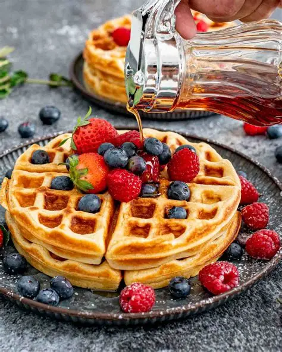

Waffles have a long and interesting history. Waffles originated from the ancient Greek glat cakes called obelios , evolved into medieval European wafers in the 9th - 10th centuries and later developed into modern waffles through innovations in the belgiu,. the Netherlands and the United State. Early waffle irons appeared in the medieval France and Belgium, and the word "waffle" entered English in 1725.